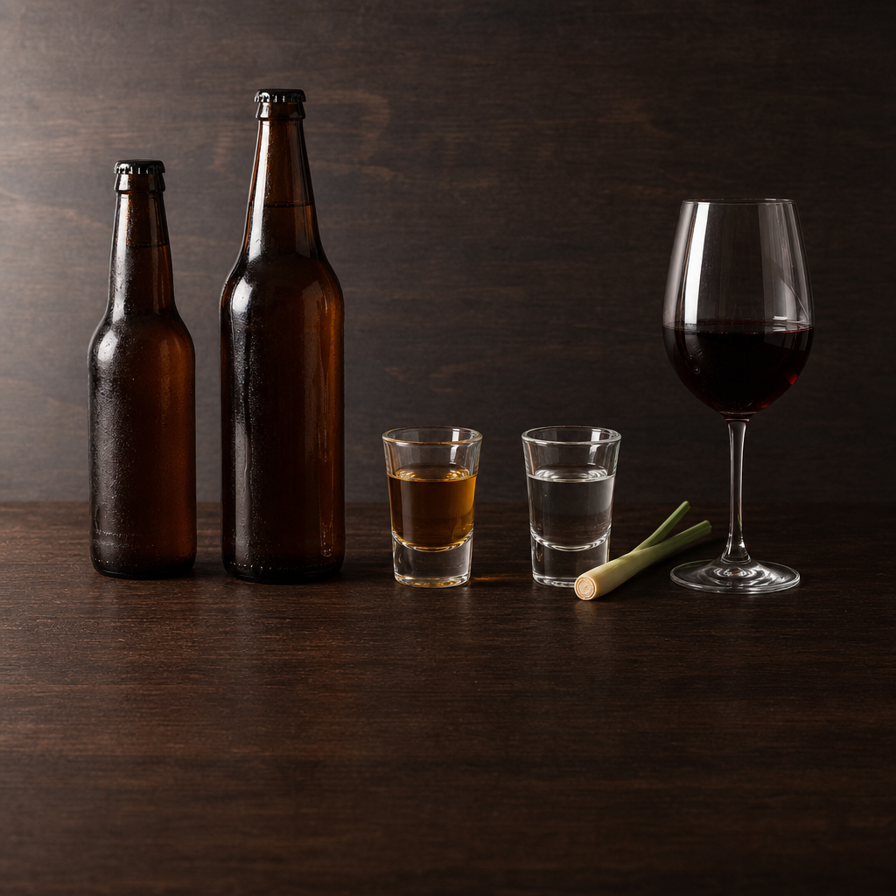
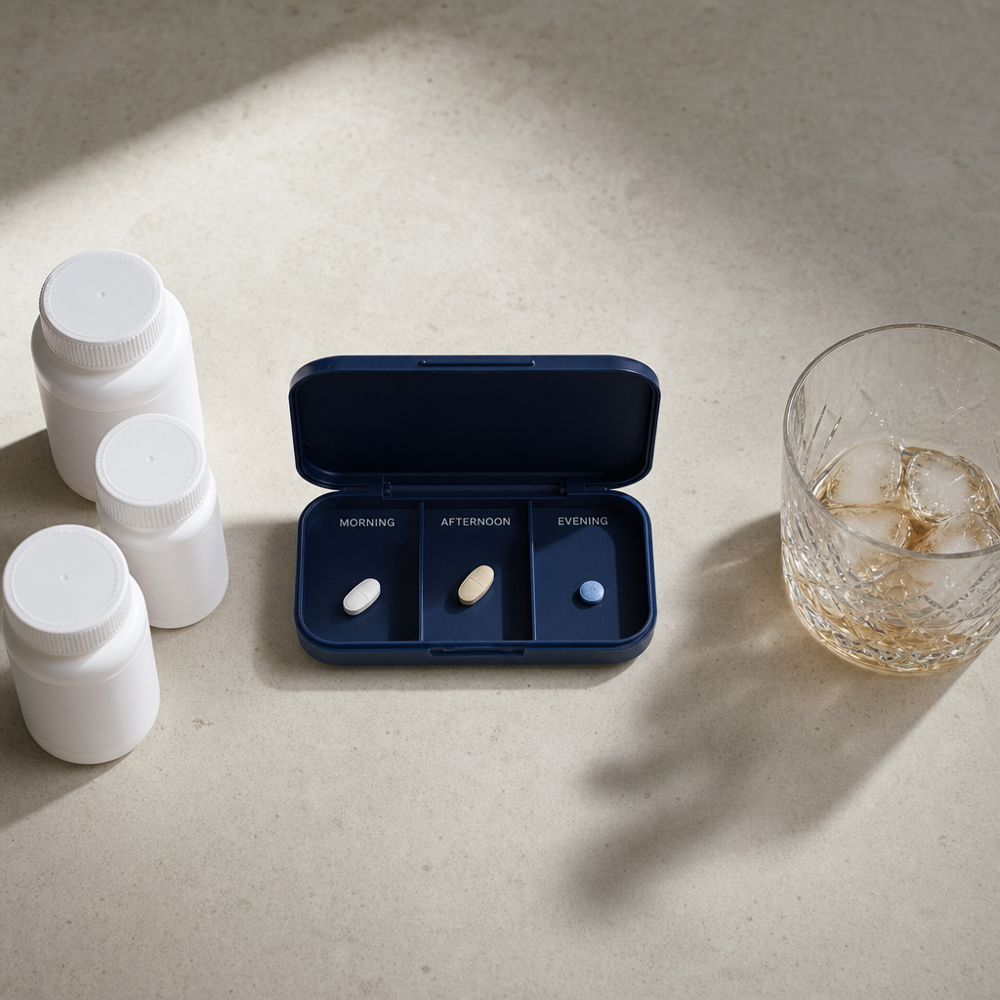

Most Filipino kidney patients do not stop drinking when they're diagnosed. The doctor says "moderate lang" — but no one ever defines what moderate means in SMB bottles per inuman session, or how it changes when you're on hemodialysis. This guide does. It will not lecture you. It will tell you the honest math, the real risks, and where the line gets crossed — so you can make a choice you can live with, with your family in mind.
What Alcohol Actually Does to Your Kidneys
Alcohol hurts the kidneys in five distinct ways, and most of them stack on top of each other when you drink heavily or regularly. Knowing the mechanism makes it easier to see why a single number — "max 2 drinks" — is not the whole answer.
Dehydration & pre-renal AKI
Alcohol suppresses antidiuretic hormone (ADH). Your kidneys lose more water than you're drinking — which is why you urinate more during inuman and feel parched the next morning. In healthy kidneys, this is recoverable. In CKD, repeated dehydration episodes shave off nephrons that won't come back.
Blood pressure spike
More than 2 drinks per day raises systolic BP by 5–10 mmHg on average — even in patients already on three antihypertensives. High BP is the #1 driver of CKD progression. If your nephrologist can't get your BP to target, your drinking pattern is often the missing answer.
Triglycerides & metabolic syndrome
Alcohol is metabolized almost entirely in the liver to triglycerides. Even moderate drinking (≥2 drinks/day) raises serum triglycerides by ~30%. High triglycerides + low HDL = the lipid pattern that drives cardiovascular death in CKD — the same death your nephrologist is trying to prevent with statins.
Direct tubular & hepatorenal injury
Heavy drinking (≥4 drinks/session) causes direct injury to the proximal tubule — measurable as enzymuria the morning after. Chronic alcohol use also causes cirrhosis; once cirrhosis develops, "hepatorenal syndrome" is a near-untreatable cause of kidney failure even in patients with previously normal creatinine.
Binge → rhabdomyolysis → AKI
A single heavy session — common during fiestas, despedidas, or pasalubong-style inuman — can trigger rhabdomyolysis (muscle breakdown) if the patient passes out and stays in one position for hours. The released myoglobin clogs the renal tubules. This causes a real, sometimes permanent acute kidney injury. Several emergency-room admissions in the Philippines every weekend are exactly this.
How CKD Changes the Calculation
The same SMB Pale Pilsen does more damage in a CKD patient than in a healthy 25-year-old. There are three reasons:
- Slower clearance. Reduced eGFR means alcohol metabolites and the dehydration effect linger longer. Your kidneys see a longer dose of harm per drink.
- Fewer nephrons to spare. A young healthy kidney has 1 million nephrons per side. A CKD Stage 3 patient may have 30–40% of that. Each insult counts proportionally more.
- Drug stacking. CKD patients are typically on 5–10 medications. Alcohol interacts with several of them — see section 6.
📊 Bottom line. Your "moderate" before CKD is your "hazardous" after CKD. The doctor isn't being conservative — the math just changed.
The Honest Numbers
One standard drink = 14 g of pure ethanol. This is the international unit. Below is how that converts to drinks you'll actually order at a Filipino bar or buy at the sari-sari store.

| Filipino drink | Typical serving | % ABV | g alcohol | Standard drinks |
|---|---|---|---|---|
| SMB Pale Pilsen | 330 mL bottle | 5.0% | 13 g | ~0.9 |
| San Mig Light | 330 mL bottle | 5.0% | 13 g | ~0.9 |
| SMB Red Horse | 500 mL bottle | 6.9% | 27 g | ~1.9 |
| SMB Red Horse (1L grande) | 1000 mL | 6.9% | 55 g | ~3.9 |
| Tanduay Light (rum & coke) | 30 mL shot | 40% | 9.5 g | ~0.7 |
| Tanduay Select (rum) | 30 mL shot | 40% | 9.5 g | ~0.7 |
| Lambanog | 30 mL shot | 40–45% | 10–11 g | ~0.8 |
| Basi / tapuy / rice wine | 200 mL glass | ~14% | 22 g | ~1.6 |
| Red wine | 150 mL glass | 12% | 14 g | 1.0 |
| Whisky / brandy | 30 mL shot | 40% | 9.5 g | ~0.7 |
⚠ The "shared bucket" math. A typical Friday inuman with three friends might finish 2 bucket-loads of Red Horse 1L (8 grandes = 8 L). That's ~440 g of alcohol total. Split among four, each person drank ~110 g — which is ~8 standard drinks in one night. The KDIGO limit is ≤2 per day.
Guideline limits (by patient type)
| Patient type | Max per day | Max per week | Source |
|---|---|---|---|
| Healthy adult — woman | 1 drink (14 g) | 7 drinks | ADA / WHO |
| Healthy adult — man | 2 drinks (28 g) | 14 drinks | ADA / KDIGO |
| CKD stage 1–2, BP at target | Same as healthy | Same as healthy | KDIGO 2024 |
| CKD stage 3, HTN or DM | ≤1 drink any sex | ≤4 drinks | KDIGO 2024 conservative |
| CKD stage 4–5, not yet on dialysis | 0 (abstain) | 0 | KDIGO 2024 |
| On hemodialysis | 0 (abstain) | 0 | ISN / KDIGO |
| On peritoneal dialysis | 0 (abstain) | 0 | ISPD |
| Post kidney transplant | 0 (abstain) | 0 | KDIGO transplant |
| Diabetic on insulin/sulfonylurea | ≤1, never on empty stomach | ≤4 | ADA 2025 |
| Heart failure / EF <40% | 0 (abstain) | 0 | AHA 2025 |
💡 There is no documented "protective" amount. The old idea that "red wine is good for the heart" is from observational studies that did not control for who the moderate drinkers were (typically wealthier, healthier, exercising more). When you correct for confounders, the J-curve disappears. The Lancet Global Burden of Disease analysis concluded: no safe lower limit exists on a population basis.
🧮 Standard Drink Calculator
Enter how much you actually drink. The calculator converts everything to grams of pure alcohol and weighs it against the guideline for your context. All data stays in your browser — nothing is sent anywhere.
Inuman Math
If You Are on Dialysis
For HD and PD patients, the recommendation is abstinence. Not because doctors are killjoys, but because three specific things go badly:
Interdialytic weight gain (IDWG) gets worse
Beer is 95% water. A single 500 mL Red Horse = 500 mL added to your IDWG that has to come off in the next session. Multiple beers = a 3–4 kg run that strains the heart and causes intradialytic hypotension and cramps.
Phosphate-binder absorption disrupted
Alcohol slows gastric emptying and changes gut pH. Calcium carbonate, sevelamer, and lanthanum all bind phosphate by chemistry that depends on stable gut conditions. Drinking with meals → less binder effect → higher serum phosphate → bone and vascular calcification.
Erythropoiesis-stimulating agents (ESA) work less
Chronic heavy alcohol use causes ESA hyporesponsiveness — your epoetin or darbepoetin doesn't pull up your hemoglobin as expected, requiring higher doses. This is often misread as "iron deficiency" until alcohol is the unspoken explanation.
🚨 For PD patients specifically. Heavy drinking impairs hand coordination, fine motor skills, and judgment — all needed to perform a safe sterile exchange. Many peritonitis cases have alcohol as the un-named root cause. If you cannot abstain, at minimum: do not perform an exchange while intoxicated or hung over.
Drug Interactions You Need to Know
Alcohol interacts with at least six medication classes common in CKD care. These are not rare events — they are the most-missed drivers of unexpected admissions in Filipino patients.

Metformin + alcohol + eGFR < 45
Lactic acidosis. Both metformin and alcohol increase lactate; reduced kidney clearance amplifies it. ADA 2025 specifically warns that binge drinking with metformin at low eGFR is one of the highest-mortality combinations in outpatient medicine. If you are going to drink heavily, hold metformin that day and the day after. Discuss this with your doctor.
Alcohol + NSAIDs (Mefenamic, ibuprofen, naproxen)
A top-3 cause of preventable AKI in Filipino ED triage. The pattern: heavy drinking → hangover headache → 2 Mefenamic 500 mg → dehydration + NSAID + alcohol-metabolite injury all together. Use paracetamol (≤3 g/day) instead. Do not take NSAIDs within 24 hours of any drinking session.
Warfarin / DOACs
Alcohol affects how warfarin is metabolized — a binge session can swing your INR up (more bleeding risk) or down (more clot risk) unpredictably. For DOACs (apixaban, rivaroxaban), alcohol increases bleeding risk additively. Keep alcohol consistent and modest if you must drink at all.
Sulfonylureas / insulin
Alcohol blocks hepatic gluconeogenesis. Drinking on an empty stomach + sulfonylurea (gliclazide, glimepiride) or insulin → severe nocturnal hypoglycemia 6–12 hours later. ADA 2025: never drink on an empty stomach if you are on hypoglycemic agents.
ACE inhibitors / ARBs / BP combinations
Alcohol is a peripheral vasodilator. Combined with losartan, telmisartan, amlodipine, or diuretics, the result is orthostatic hypotension — getting up from the toilet or bed and fainting. Common cause of fall-related hip fractures in elderly CKD patients.
Statins / paracetamol
Both are metabolized by the same liver enzymes alcohol uses. Heavy regular drinking + atorvastatin/rosuvastatin = higher transaminase rise risk. Paracetamol toxicity threshold drops from 4 g/day to ~2 g/day in regular drinkers. Keep paracetamol ≤2 g/day if you drink daily.
Filipino-Specific Risks
Methanol in unregulated lambanog
The Department of Health has issued multiple advisories about methanol-contaminated lambanog after fatal outbreaks in Quezon and Laguna. Methanol is metabolized to formic acid — which causes blindness, severe acidosis, and AKI within 24 hours of a single contaminated dose. If you are going to drink lambanog, buy only from licensed sources with batch labels. Homemade or unbranded "gata-gata" carries this risk every time.
"Pasok lang" — the social pressure problem
Filipino inuman culture is hospitable to a fault. Saying "no" to a tagay can feel rude, especially with elders, in-laws, or boss-types. The most useful frame: this is not about politeness — it is about your family seeing you alive for another five years. Your kasangga can drink for both of you tonight; you'll still be there to watch their kids graduate.
Fiesta & despedida binge pattern
Binge drinking is the most dangerous pattern for CKD. Weekly fiestas, baptisms, despedidas, balikbayan welcomes — these add up. Three "moderate" weeks in a row plus a fiesta weekend is functionally a heavy-drinking month. The rhabdomyolysis-AKI cases at PGH every Monday morning are this pattern, every time.
NSAID-for-hangover combo
Already covered in Section 6 but worth repeating: the Sunday-morning Mefenamic 500 mg for hangover headache is a classic preventable AKI trigger. Use paracetamol or wait it out with water and electrolytes.
Practical Strategies to Cut Back
Decline scripts (Taglish)
Use these word-for-word. They land softer than "I don't drink."
When to Get Help
If any of these apply, the issue is no longer about how many drinks per week — it's about addiction, and addiction needs a different kind of help. None of this is shameful. CKD itself is hard; many patients turn to alcohol to cope, and the cycle gets worse silently.
🔍 Quick self-screen (AUDIT-C)
If any of these is "yes" — discuss with your doctor at your next visit:
- You drink ≥3 times per week, every week
- You drink ≥4 drinks in one sitting at least monthly
- You have ever felt you should cut down
- Others have suggested you should cut down
- You have had a morning drink to steady yourself
📞 Where to get help in the Philippines
- DOH Behavioral and Treatment Centers (BTCs) — government-run, PhilHealth-covered residential or outpatient programs. Hotline: 1553 (DOH Substance Abuse helpline).
- Your nephrologist — bring it up. Many of us have referral relationships with psychiatry and addiction medicine; you don't have to navigate this alone.
- Alcoholics Anonymous Philippines — free, anonymous, weekly meetings in major cities. Search "AA Philippines" for current meeting schedules.
- DSWD social workers — at your nearest LGU, can help connect you to community-based support and family counseling.
Final note. This guide is for patient education. It is not a substitute for a clinical consultation. The thresholds shown are from international guidelines applied to a Filipino context; your nephrologist may set tighter or looser limits based on your full medical picture. Talk to them honestly about how much you actually drink — it is the most useful single piece of information you can give them.